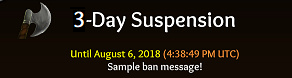
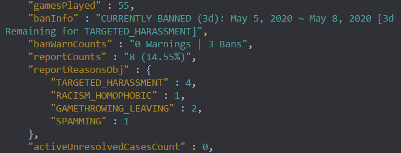
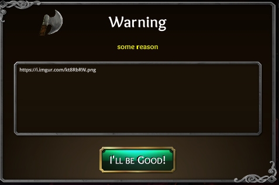
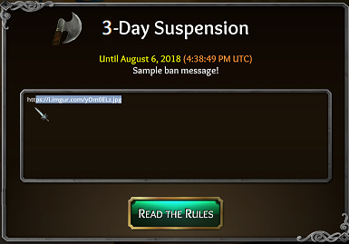

( Short URL = https://toli.es/mod )
Introduction
Whenever you report a player at the end of a game, it goes straight into our report queue for moderation. We can automatically detect how high of a priority the report based on numerous aspects, one especially being report history and patterns of behavior that we can now detect automatically to bump/adjust these priority levels. This information we have access to can be found within our privacy policy.
2020 Update
See our 2-years of moderation stats/analysis:
Player History
We can easily judge the “chances” that the player is a troll before we even see the report:

Although we don’t use this information, alone, to issue disciplinary action – it definitely helps display likelyhood.
We also note your reported-to-games-played ratio. Even after salt reports, the average % is between 1~2%.
Hierarchy
All reports are 100% human reviewed before a disciplinary action is issued. We use a laddered escalation system of volunteers to help aid the human reviews of reports, all hand-chosen by í42 staff:
-
Guide
The best community member volunteers were curated to help others. They may often be found hanging out in Discord’s #ask-a-guide to answer questions to new players, helps with community activities, and also helps review reports to make suggestions. They submit these suggestions and pass them along to a Judge+ -
Judge
Promoted Guide volunteers that have been with us for a long time and have done exceptionally well with reports, generally 18+ years of age, and a moderator candidate. These volunteer Judges have the ability to FYI, warn, & suspend (lower-tier). For anything beyond this, the report is further escalated to a Mod+. -
í42-Moderator
The right-hand of Imperium42 staff members, these volunteers are the best of the best Judges, hand-chosen, and generally only selected after months of service as a Judge. These moderators are extremely active, deeply participates in the community, and can handle higher-tier suspensions, unbans (appeals), and can even investigate live games for emergencies. -
í42-Staff
For higher-tier suspensions, paid staff members (non-volunteer devs) must approve or have the favor of multiple mods for approval. This includes permanent bans.
Types of Disciplinary Actions
By escalating order:
- Warning - This is official and recorded. Repeating this action may result in a suspension! These only show in the lobby.

- Suspension - Closes the game and prevents further access beyond the login screen until the suspension is lifted. These can even show in-game. Generally, the options are:
- 3d
- 7d
- 15d
- 30d
- Permanent (10y)
Although is the general scale, repeated offenses from the same category and severity can skip tiers, especially if done intentionally.

Evidence + The Report Handling Flow
When a Guide+ reviews reports to make a verdict, this is what it looks like:

We have a huge array of logs, filters, report/action history, match info (including the real trollbox authors, whispers, logs), and more.
If the user received a suggestion from a Guide, we post progress and summary in a secret Discord channel with restricted access so that other volunteers may see progress + so that we can quickly act on those, manually, if need. Reports by Judges+ prioritize already-suggested actions to swiftly assist in serving out a verdict. Guides+ see this:
If the user receives a suspension by a Judge+, we also provide proof of action within the Discord #justice channel so players know their reports are meaningful (Warning: This channel sometimes contains NSFW evidence):
Judges+ see this:
Justice Channel Improvements(+5/1/2019)
- You will now see a users warn/ban history. If you’re wondering why someone got suspended for something seemingly small, it may be because they were previously warned/suspended before.
- Spoilers are now detected and masked with a spoiler warning.
- Obscene deathnotes are now detected and masked with a censored warning.
Incentives (+1/15/2019)
As of patch v2.1.1, there is now a higher-tier of Guide called Report Squad, a Discord-exclusive role. Discord roles now sync in-game and may offer +gp incentives to Report Squad members and Judges.
*Note that innocent cases reward just as much gold as guilty cases: If corruption were to occur, these folks would more likely “inno” cases rather than guilty due to the sheer amount of time saved.
In order to obtain Report Squad, a Guide must continuously prove worthy of the promotion after numerous report resolutions that were both accurate and just (as deemed by the Mod+ team).
- Report Squad members automatically earn 50gp per report
- Judges automatically earn 75gp per report.
Ban Evasions
We have alt detection: If a suspended player tries to bypass this, they will receive a 30d ban on the evasion account (which will extend to the main account) and be flagged for having a banned alt.
Emergencies
We have 24/7 support on our Discord for really bad “fix it now” cases. For this, players may ping a @moderator or @Judge to deal with the action. While reports at the end of the game give us the whole story, sometimes a screenshot will suffice.
Judges+ have access to quick, Discord actions of in-game moderation.

What happens to fake/salt reports?
They backfire. Disciplinary action will take a hit on the reporter, instead, if intentional. We’ll know~
Want to become a Guide+?
Simply participate in our community, help others instead of troll, and be active in our Discord (especially in #ask-a-guide). There is no formal application – we’ll come to you with an invite 
Misc
-
Terms of Service + Privacy Policy + GDPR Info can be viewed @
https://toli.es/legal -
Suspension/Ban FAQ can be found @
http://throneofli.es/banfaq -
Old report/mod system can be found @
Here's what happens after you report a player: Your reports MATTER!


 We don’t review players, we review the reports.
We don’t review players, we review the reports.
{kind=link}
{kind=link}